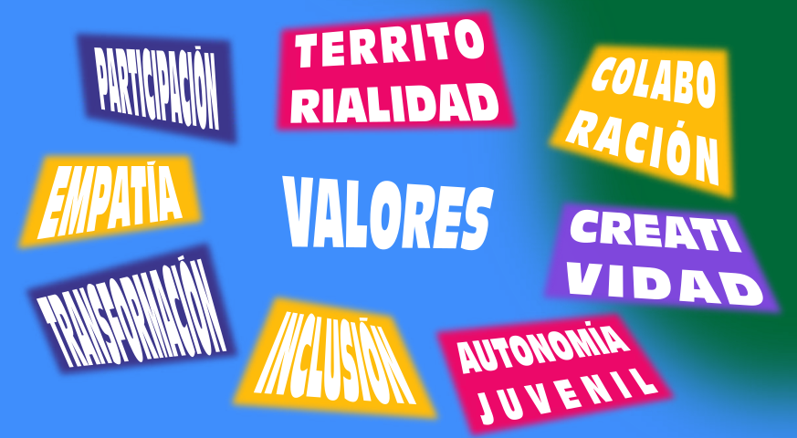

GUATEMALA · HECHA POR Y PARA JÓVENES
LAS
JUVENTUDES
nos movemos.
Conectamos ideas, liderazgo y energía joven
para transformar nuestros territorios.
Tu voz tiene lugar. Tu territorio también.
DE TU IDEA AL TERRITORIOEl cambio empieza
con tu voz.
con tu voz.
JUVENTUDES EN EXPANSIÓN TERRITORIALDESLIZA PARA CONOCERNOS
01 / SOMOS JET
LAS IDEAS CRECEN CUANDO SE COMPARTEN
La juventud
no espera.
Se organiza.
Somos Juventudes en Expansión Territorial, una red nacional hecha por y para jóvenes en Guatemala.
Abrimos espacios para desarrollar liderazgo, expresar ideas y participar en las decisiones de nuestros territorios.
Aquí también hay lugar para ti
02 / EL MOVIMIENTO
IDEAS CONEXIONES ACCIÓNMenos esperar.
Más movernos.
Escuchamos lo que pasa cerca.
Conectamos para llegar más lejos.
Activamos lo que imaginamos.
01Escuchamos
TU REALIDAD CUENTA
Las realidades de cada territorio guían el camino. Tu voz y tus ideas son el punto de partida.
Trae tu idea02Conectamos
NADIE CRECE EN SOLEDAD
Personas, ideas y oportunidades se encuentran para crecer en red. Construimos conexiones entre juventudes y organizaciones.
Hagamos equipo03Activamos
DEL LIDERAZGO A LA ACCIÓN
El liderazgo joven se vuelve acción colectiva. Queremos que las ideas se conviertan en cambios que se sienten en el territorio.
Quiero participar03 / EL MOVIMIENTO SE COMPARTE
NUESTRAS VOCES · NUESTROS ENCUENTROS9 publicaciones
04 / HAGAMOS EQUIPO
Tu energía
también
cuenta.
No necesitas tener todo resuelto.
Empieza con una idea y ganas de sumar.
HECHA POR
Y PARA JÓVENES.
Y PARA JÓVENES.
ENERGÍA EN EL TERRITORIO
La red se expande.
Conectamos juventudes y territorios en Guatemala.
El mapa no pudo cargar. Explora los territorios en la lista.
Petén
JET tiene presencia aquí
Presencia de JET
Vista general de la red, sin datos individuales.
Mapa: © OpenStreetMap / geoBoundaries · ODbL